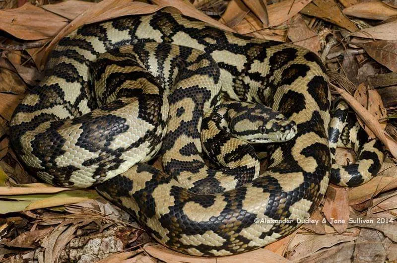

爬行动物 · 动物界
地毯蟒 Morelia spilota

澳大利亚常见的无毒蟒蛇，身上花纹像地毯图案，能攀爬树木，在农场和居民区附近捕食鼠类，适应力很强。
- 分类
- 门脊索动物门纲爬行纲目有鳞目科蟒科属树蟒属
- 栖息环境
- 澳大利亚与周边的森林、灌丛、草原及农田
- 地理分布
- 澳大利亚大部分地区、新几内亚及印度尼西亚部分岛屿
- 保护级别
- IUCN 无危（LC）；CITES 附录 II；非中国原产
物种志
地毯蟒体长 2–3 米，个别可达 4 米，身体较细而结实，头颈分界明显；体色变化很大，常见以黄褐、橄榄褐或黑色为底，缀有淡黄色或白色斑块与网纹，花纹形似地毯图案，“地毯蟒”之名由此而来。不同产地和亚种的花纹差异很大，是澳洲最易辨认的蟒蛇之一。
它分布于澳大利亚、新几内亚和印度尼西亚部分岛屿，栖息于森林、灌丛、草原和农田附近，善于攀爬也常在地面活动，夜间捕食鼠类、鸟类、蜥蜴和小型哺乳动物。每年 9–12 月繁殖，雌蟒产卵 10–40 枚，盘在卵上孵卵约 50–60 天。它适应力强，常出现在农场和居民区附近捕鼠，对控制鼠害有益；目前被列为无危物种，是澳洲最常见的蟒蛇之一。
形态与习性
- 食性鼠类、鸟类、蜥蜴和小型哺乳动物
- 体长2–3 m，最长约 4 m
- 体重约 3–10 kg
- 寿命约 15–20 年
- 繁殖卵生，10–40 枚，孵化 50–60 天
- 活动节律夜行性，善攀爬
趣味知识
- 地毯蟒身上的花纹像地毯图案，因此得名“地毯蟒”。
- 不同地区的地毯蟒花纹差异很大，曾被认为是多个不同亚种。
- 它常在农场和居民区附近捕鼠，对控制鼠害有帮助。